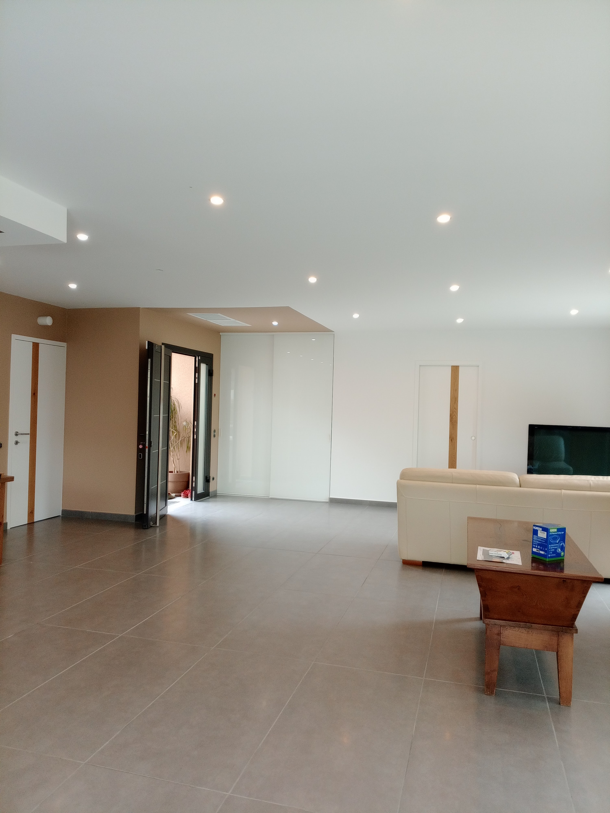

MTS DECO Peinture et Décoration Vernet les bains
MTS DECO : votre peintre en bâtiment à Vernet les bains pour des projets de peinture et de décoration intérieure et extérieure aux finitions modernes.
MTS DECO : Peinture intérieure, extérieure et décoration à Vernet les bains, pour particuliers et professionnels, avec finitions modernes et texturées.
Un service exceptionnel, la qualité de la peinture est remarquable et durable.
Je suis très satisfait du résultat, l'équipe est professionnelle et à l'écoute.
Découvrez les retours de nos clients satisfaits sur nos services de peinture et décoration.

Nous intervenons pour la peinture et la décoration de locaux commerciaux, bureaux, et espaces professionnels, en adaptant nos prestations à vos contraintes et à votre identité visuelle.
Nous proposons une gamme de finitions texturées pour créer des effets décoratifs uniques, allant de l'aspect sablé au béton ciré, en passant par le stuc.
Nos délais varient selon la complexité du projet et la disponibilité, nous vous fournissons un devis personnalisé avec une estimation précise.
Oui, nous offrons des devis personnalisés et gratuits pour évaluer au mieux vos besoins.
MTS DECO intervient principalement dans la ville de Vernet les bains et ses environs proches.